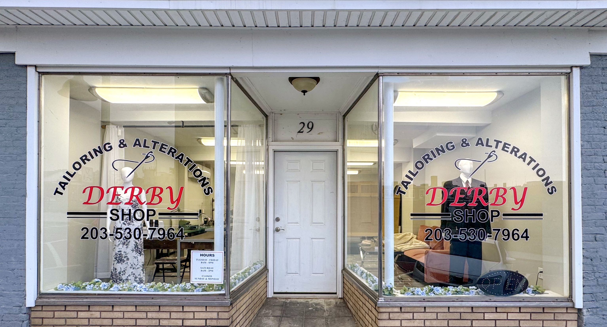

Tailoring and Alterations Derby Shop
29 Minerva Street, Derby, CT · Tue–Fri 8–5 · Sat 8–2 · Sun & Mon Closed
Master Tailor · 30+ Years of Professional Experience
Master Tailoring & Alterations
Careful, experienced alterations and repairs for clothing, formalwear, curtains, and pillow covers.
Walk-ins welcome · English and Shqip spoken
Master Tailor with 30+ Years of Professional Experience
Every garment and fabric project is handled by a master tailor with more than 30 years of professional experience, combining skilled workmanship, precise fit, and individual care.
